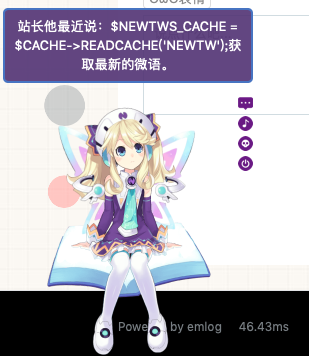

Live2D Widget
特性 Feature
在网页中添加Live2D看板娘。
Add Live2D widget to web page.
警告：不支持IE。
WARNING: DO NOT SUPPORT IE.
示例 Demo
在米米的博客的左下角可查看效果。需要使用支持WebGL的现代浏览器浏览。



这个仓库中也提供了两个Demo，即
- demo1.html ，展现基础效果
- demo2.html ，仿NPM的登陆界面
依赖 Dependencies
本插件需要jQuery和font-awesome支持，请确保它们已在页面中加载，例如在<head>中加入：
jQuery and font-awesome is required for this plugin. You can add this to <head>:
<script src="https://cdn.jsdelivr.net/npm/jquery/dist/jquery.min.js"></script>
<link rel="stylesheet" href="https://cdn.jsdelivr.net/npm/font-awesome/css/font-awesome.min.css"/>否则无法正常显示。
使用 Usage
你可以直接这样使用：
<script src="https://cdn.jsdelivr.net/gh/stevenjoezhang/live2d-widget/autoload.js"></script>将这一行代码加入<head>或<body>，就可以看到效果了。
（换句话说，如果你是小白，或者只需要最基础的功能，就把这一行代码，连同前面的两行代码，一起放到html的<head>中即可；如果页面是用各种模版、php、asp生成的，也要类似的修改，可能略为麻烦）
但是！我们强烈推荐自己进行配置，否则很多功能是不完整的，并且可能产生问题！
如果你有兴趣自己折腾的话，请看下面的详细说明。
Using CDN
如果要自定义有关内容，可以把这个仓库Fork一份，然后进行修改。这时，使用方法对应地变为
<script src="https://cdn.jsdelivr.net/gh/username/live2d-widget/autoload.js"></script>将username替换为你的GitHub用户名即可。
Self-host
你也可以直接把这些文件放到服务器上，而不是通过CDN加载。
- 如果你可以通过ssh访问你的主机，请把整个项目克隆到服务器上。执行：
cd /path/to/your/webroot # Clone this repository git clone https://github.com/stevenjoezhang/live2d-widget.git - 如果你的主机无法用ssh连接（例如一般的虚拟主机），请选择
Download ZIP，然后通过ftp上传到主机上，再解压到网站的目录下。 - 如果你是通过Hexo等工具部署的静态博客，请选择
Download ZIP，然后解压到本地的博客目录下，例如source下与_posts同级的目录。重新部署博客时，相关文件就会自动上传到对应的目录。（还需要在Hexo主题相关的swig或ejs模版中正确配置路径，才可以加载）
这样，整个项目就可以通过你的服务器IP或者域名从公网访问了。你可以试试能否正常地通过浏览器打开autoload.js和live2d.min.js等文件。（最好还要确定一下这些文件的内容是正确的，有时由于字符集的问题，文件中可能出现乱码；此时需要重新下载）
如果没有问题，接下来需要修改一些配置。（需要通过服务器上的vim，emacs，cPanel文件管理器等工具修改；你也可以先在本地完成这一步骤，再上传到服务器上）
修改autoload.js中的参数live2d_path为live2d-widget这一文件夹在公网上的路径。比如说，如果你可以通过
https://www.example.com/path/to/live2d-widget/live2d.min.js访问到live2d.min.js，那么就把live2d_path的值修改为
https://www.example.com/path/to/live2d-widget/路径末尾的/一定要加上。具体可以参考autoload.js内的注释。
完成后，在你要添加看板娘的界面加入
<script src="https://www.example.com/path/to/live2d-widget/autoload.js"></script>就可以加载了。
waifu-tips.json中包含了触发条件（selector，选择器）和触发时显示的文字（text）。源文件是对Hexo的NexT主题有效的，为了适用于你自己的网页，也需要自行修改，或增加新内容。
警告：作者不对包括但不限于waifu-tips.json和waifu-tips.js文件中的内容负责，请自行确保它们是合适的。
更多 More
Live2D官方网站：
https://www.live2d.com/en/
https://live2d.github.io
可以在官方网站下载SDK，包含更多的功能，也可以自行编译。具体操作是：
- 点击Cubism SDK for Web，下载相关文件
- 解压并进入目录，执行
npm install - 执行
npm run build-sample
如果有任何疑问，欢迎提Issue。如果有任何修改建议，欢迎提PR。
鸣谢 Credits
代码自这篇博文魔改而来：
https://www.fghrsh.net/post/123.html
相比初始的版本，这个Repo增加了一些功能，并优化了提示展现机制。
更多内容可以参考：
https://zhangshuqiao.org/2018-07/在网页中添加Live2D看板娘/
https://imjad.cn/archives/lab/add-dynamic-poster-girl-with-live2d-to-your-blog-02
https://github.com/summerscar/live2dDemo
还可以自行搭建后端api，并增加模型（需要修改的内容比较多，此处不再赘述）：
https://github.com/fghrsh/live2d_api
https://github.com/xiazeyu/live2d-widget-models
https://github.com/xiaoski/live2d_models_collection
除此之外，还有桌面版本：
https://github.com/amorist/platelet
https://github.com/akiroz/Live2D-Widget
另外，点击看板娘的纸飞机按钮，会出现一个彩蛋，这来自于WebsiteAsteroids。
许可证 License
Released under the GNU General Public License v3
http://www.gnu.org/licenses/gpl-3.0.html
更新 Update
2018年10月31日，由fghrsh提供的原API停用，请更新至新地址。参考文章：
https://www.fghrsh.net/post/170.html